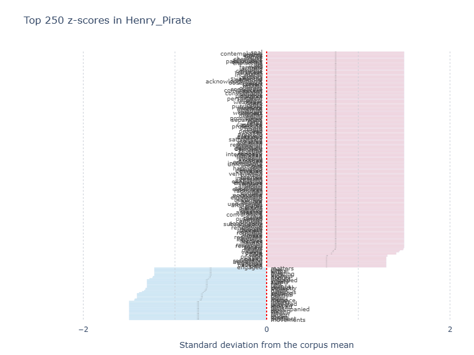
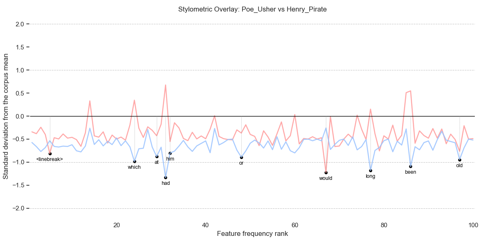
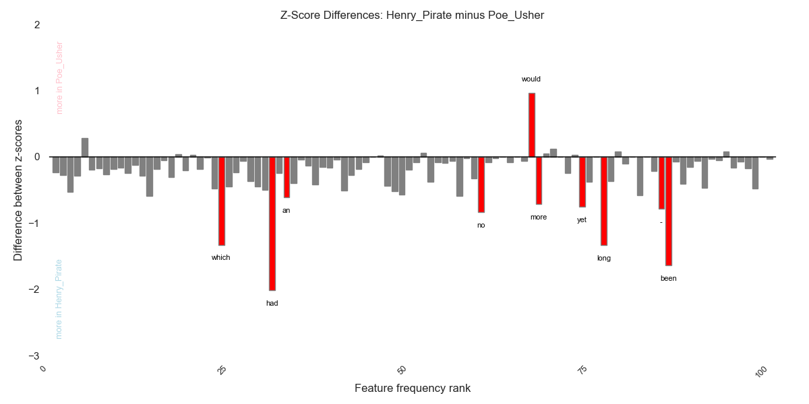
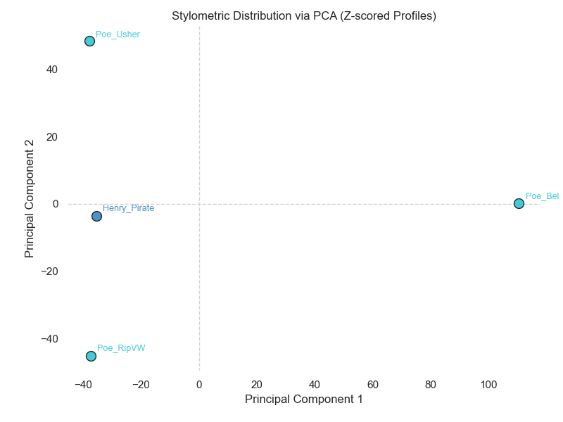
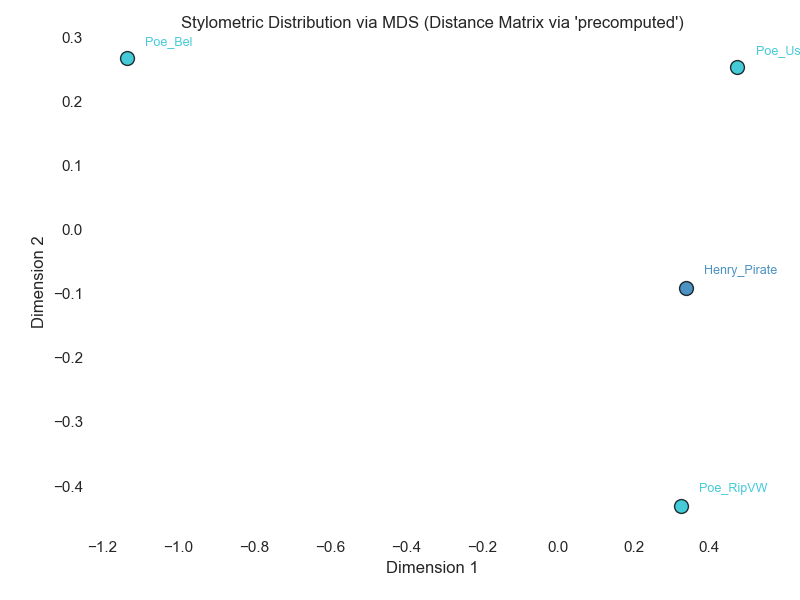
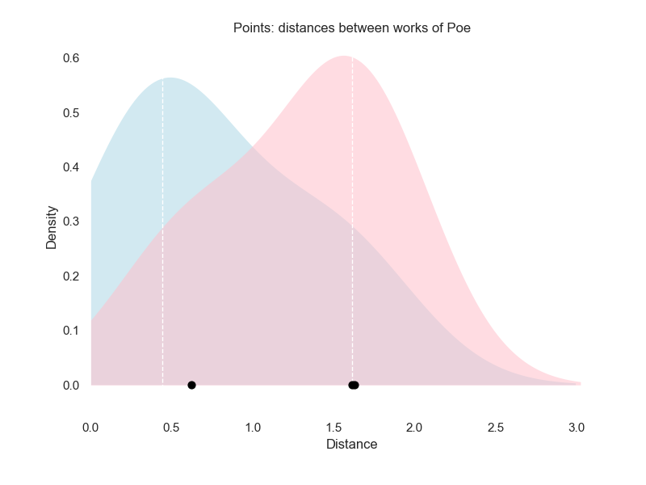
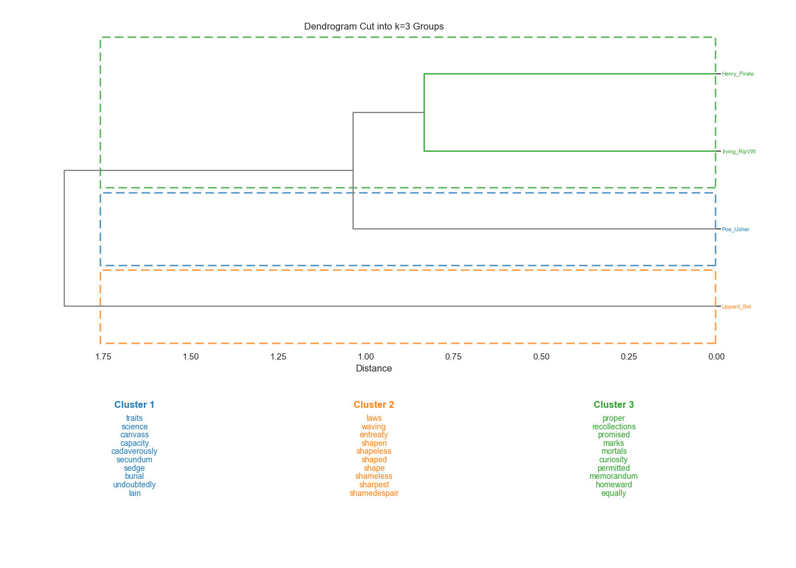

Feature Analysis with SeeTrees¤
Overview¤
The seetrees module provides stylometric analysis and visualization tools for document-term-style data, such as comparing document profiles, computing distance matrices, visualizing document relationships, and exploring feature importance across clusters. It is particularly effective for identifying authorship patterns or stylistic shifts across a corpus.
SeeTrees is adapted from the R 'see' package by Artjoms Šeļa.
Setup¤
The SeeTrees class accepts frequency tables, distance matrices, and Lexos DTM objects as input. First, ensure you have your literary data organized as a frequency table (e.g., a pandas DataFrame where rows are documents and columns are word frequencies) or a Lexos DTM object (recommended).
# If you already have a Lexos DTM object
st = SeeTrees(dtm=dtm)
# Or if you already have a frequency table DataFrame
# st = SeeTrees(frequencies=frequencies_df)
Computing Stylometric Distances¤
To compare how "distant" authors or texts are from one another, you must compute a distance matrix with the SeeTrees compute_distances method:
# Compute distances using Burrows' Delta
distance_matrix = st.compute_distances(metric="delta")
print(distance_matrix.head())
| Poe_Usher | Poe_Bel | Poe_RipVW | Henry_Pirate | |
|---|---|---|---|---|
| Poe_Usher | 0 | 1.63161 | 0.621068 | 0.441966 |
| Poe_Bel | 1.63161 | 0 | 1.61309 | 1.50241 |
| Poe_RipVW | 0.621068 | 1.61309 | 0 | 0.416097 |
| Henry_Pirate | 0.441966 | 1.50241 | 0.416097 | 0 |
SeeTrees supports five common metrics for producing pairwise distance matrices from frequency data. These are passed to compute_distances with the metric parameter, as shown above.
Choosing a Distance Metric¤
Choosing between the five supported metrics often depends on whether you want to prioritize the raw volume of word usage (Manhattan/Cosine) or the standardized stylistic variance across your corpus (Cosine Delta and the other Delta metrics). The latter allows features to be compared on a common scale based on their distribution across the corpus.
- Manhattan (
manhattan): This is the standard Manhattan distance calculated using raw frequencies. It is the sum of the absolute differences between the frequencies of every word (feature) in two documents. Words that appear very often (like "the" or "and") will have a much larger impact on the final distance calculation than rare words. - Cosine (
cosine): This is the standard cosine distance calculated using raw frequencies. Rather than measuring the absolute "path" between points (like Manhattan), it measures the angle between document vectors in a multi-dimensional space. Cosine distance is often used because it is effective at comparing documents regardless of their length; it focuses on the relative proportions of words rather than their absolute counts. - Burrows' Delta (
delta): This metric uses Manhattan distance over z-scores. In this approach, every feature (word) in your analysis is treated with equal importance after it has been standardized into a z-score. - Eder's Delta (
eder_delta): This metric uses a rank-weighted Manhattan distance calculated over z-scores. - Cosine Delta (
cosine_delta): This metric calculates the cosine distance specifically on z-scored frequencies. Like the other "Delta" metrics, it first standardizes the data so that features are compared on a common scale based on their distribution across the corpus.
For more information on z-scores, see the next section.
Manhattan and cosine metrics are frequent first stops in stylometric analysis, especially if your corpus contains documents of roughly equal length. For larger, uneven corpora, Burrows' Delta is the "standard" approach in many stylometric studies, applying a uniform weight to all features in your chosen set (e.g., the top 1,000 words) after z-score scaling. In contrast, Eder's Delta is designed to give more weight to the most frequent words in a list (the top ranks) and gradually less weight to less frequent words. This is often preferred if you believe the very most frequent function words are the most reliable indicators of an author's style (for instance).
Here are some rough guidelines for choosing a metric:
- Choose
manhattanorcosineif you want to analyze raw volume. This is useful if you believe the sheer frequency of specific words is the most important stylistic marker. - Choose "Delta" metrics if you want to use standardized (z-scored) data. Z-scoring ensures that all features are compared on a common scale, preventing high-frequency words from drowning out more subtle stylistic indicators.
- Choose Eder's Delta is designed to give more weight to the most frequent features and gradually less weight to less frequent features.
- Choose Manhattan-based metrics (like
manhattanordelta) if you want to measure the absolute difference in word usage between documents. - Choose Cosine-based metrics (like
cosineorcosine_delta) if you want to focus on the pattern or orientation of word usage in documents of different lengths.
Since SeeTrees allows you to compute distance matrices easily, you can compare the results of each to see which produces a more coherent clustering for your specific dataset. For instance, you could compare Burrows' and Eder's Delta with the following the procedure to see which suits your assumptions about your documents:
- Compute both matrices: You can run
st.compute_distances(metric="delta")and thenst.compute_distances(metric="eder_delta")to generate different dataframes. - Visualize the results: Use
st.get_mds_plot(...).show()to see how authors or texts shift in 2D space (MDS) under different distance calculations. - Evaluate Cluster Strength: Use
st.get_tree(k=...).show()to see which metric produces a dendrogram that better aligns with known metadata, such as authorship or genre.
The visualization functions are detailed further below.
Analyzing Feature Importance (Z-Scores)¤
SeeTrees uses z-scores to measure how many standard deviations a feature's (word's) frequency is from the mean across the corpus. This allows you to identify which words are most distinctive for a specific author or text.
- A positive z-score indicates that a feature (e.g., a specific word) is used more frequently in that document than the average usage across the entire corpus.
- A negative z-score indicates that the feature is used less frequently than the corpus average.
- A near zero z-score indicates the feature's usage is close to the average for the corpus.
Viewing Distinctive Features for One Text¤
To see the top 10 most distinctive terms for a target text:

The plot can get crowded, so you may have to use the pan and zoom function from the toolbar that appears when you hover over the plot. In many cases, the top features have similar z-scores, and you won't start to see variation until far down the list. If the plot does not provide readable or usable results, you can also obtain the z-scores as a pandas DataFrame.
| Feature | Z-score | |
|---|---|---|
| 0 | seal | 1.5 |
| 1 | safely | 1.5 |
| 2 | rosalies | 1.5 |
| 3 | exhibited | 1.5 |
| 4 | exhausted | 1.5 |
| 5 | embraced | 1.5 |
| 6 | miniature | 1.5 |
| 7 | talents | 1.5 |
| 8 | attained | 1.5 |
| 9 | indies | 1.5 |
Note
If you haven't scrubbed linebreaks and whitespace from your texts, they will appear as invisible textual features in the z-scores. In order to make them visible, they are converted to "
Comparing Two Documents¤
You can compare two documents with two dedicated methods:
- Overlay Profile ("profile"): This view overlays the z-score profiles of two different documents. By looking at where the peaks and valleys align or diverge, you can see if two authors share similar stylistic habits (e.g., both using specific function words at a high rate) or if their styles are distinct.
- Difference Profile ("difference"): This displays a bar chart of the direct z-score differences between a target and a source document. It helps you pinpoint exactly which words are responsible for the stylistic distance between two texts.
Here are some examples:
# Compare two authors' profiles (overlay)
st.get_overlay_plot(
source_text="Poe_FallOfHouseUsher_1839",
target_text="HenryWP_ThePirate",
top_diff=10,
max_rank=100,
).show()

# Compare two authors' differences
st.get_difference_plot(
source_text="Poe_FallOfHouseUsher_1839",
target_text="HenryWP_ThePirate",
top_diff=10,
max_rank=100,
).show()

Both views rely on z-scores, which standardize word frequencies so they can be compared on a common scale. The key differences between them are:
- The profile view provides an overlay of the z-score profiles for both the source and target documents. It allows you to see the "stylistic fingerprints" of two texts simultaneously. By looking at where the peaks (high usage) and valleys (low usage) align or diverge, you can get a sense of the overall stylistic similarity between two authors or works.
- The difference view displays a bar chart of the direct z-score differences, calculated by subtracting the source z-scores from the target z-scores. Instead of showing two separate profiles, it highlights the magnitude of the gap between them for specific features. This makes it easier to pinpoint exactly which words are most responsible for the stylistic distance between the two texts.
When using either view, you can control the number of top features displayed by using the top_diff parameter.
Visualizing Document Relationships¤
You can visualize the "stylistic space" of your corpus with dedicated methods:
get_pca_plot(...)get_mds_plot(...)get_density_plot(...)
These methods all return plot objects that you can display with .show(). While they serve the same goal, showing how texts or authors cluster stylistically, they differ in their data requirements and how they process that data.
Note
get_mds_plot(...) and get_density_plot(...) require a precomputed distance table.
Run st.compute_distances(metric=...) first.
Principal Components Analysis¤
The PCA method focuses on the variance in feature usage. It projects the frequency-table data into two dimensions so you can inspect stylistic proximity. It does not require a precomputed distance matrix.

Multidimensional Scaling¤
The MDS method focuses on maintaining the relative distances between documents as defined by a stylometric metric. MDS requires a distance matrix to be available, so compute it first with compute_distances(metric=...).
# Visualize relationships using MDS
st.compute_distances(metric="delta")
st.get_mds_plot(group=True, author=None, pattern=r"^.*?(?=[_\s-]|\d)").show()

Tip
If you attempt to use MDS without first computing a distance matrix, the module will return a ValueError indicating the distance table is required. Conversely, PCA will fail with a ValueError if valid frequency data is missing.
Density Plots¤
You can use a density plot to look at how similar or different pairs of texts are in aggregate.
- Each pair of texts gets a distance score.
- The plot draws a smooth curve showing how common each distance value is.
- If two texts are very similar, their distance is small; if they are different, the distance is larger.
This is useful when you want to see a broad view of how text pairs are distributed by distance, to compare same-author vs different-author similarity, or to highlight one author’s distances. It is a higher-level, aggregate way to understand stylistic distance, rather than plotting individual documents in 2D as we do with PCA and MDS.
To generate a density plot, call get_density_plot(...).
To draw one curve for pairs from the same author/class and another curve for pairs from different authors/classes, set group=True (the default). To draw a single curve for all pairs, set group=False.
To highlight one author/class inside the density plot, set the author parameter. This is how the function decides whether two documents belong to the class. By default, the function looks for the value you set in document labels, separated by an underscore. For instance, if you have labels like "Austen_Emma" and "Austen_Pride", and you set author=Austen, that will be identified as the class name and all documents beginning with "Austen_" will be grouped within this class. If the default behaviour does not work for you, it is possible to customise the method of parsing labels by providing your own regex pattern to the pattern parameter.
Internally, density view reads the list of document labels from distance_table and assigns each label to a class. It then computes all pairwise distances from the lower half of the distance matrix and for each pair records the distance value, whether they belong to the same class, and the class label of the first document in the pair. It then makes a table of these values and plots density curves based on the values in the table.
If you set group=True, you get two curves: one for same-author pairs and one for different-author pairs. If the same-author curve is far to the left, that means same-author texts are generally closer together. If the different-author curve is farther right, that means different-author texts are more distant.
# Visualize relationships with a density plot
st.compute_distances(metric="delta")
st.get_density_plot(group=True, author="Poe", pattern=r"^.*?(?=_)")
st.show()

If group=False, you will see a single overall distance distribution. This is useful to understand the general range of distances in the dataset.
Hierarchical Clustering and Dendrograms¤
The get_tree() method implements a hierarchical agglomerative clustering and renders a dendrogram to show how documents cluster together stylistically. In this respect, it is like the Lexos dendrogram module. However, SeeTrees offers some additional functionality to help you understand the textual features responsible for the clustering.
When you cut the tree into (k) clusters, SeeTrees calculates Eta-squared (η^2^), which represents the proportion of total variance in a feature explained by cluster assignment. This identifies the "top terms" that actually define the clusters. It works through the following process:
- It calculates the association between a categorical grouping (the clusters defined in a dendrogram) and a numeric variable (the frequency of a specific feature).
- It represents the proportion of total variance in a feature that is explained by cluster assignment. For example, if a feature has a high eta-squared value, it means the frequency of that feature varies significantly between clusters but remains relatively consistent within each cluster.
- It identifies distinctive terms in a cluster. When you cut a dendrogram into k clusters, SeeTrees reports the top eta-squared features most strongly associated with the clusters, effectively highlighting the vocabulary that distinguishes one group of texts from another.
In short, while a dendrogram shows that texts are similar, eta-squared explains why they were grouped that way by pointing to the most influential terms.
# Create a dendrogram with 3 clusters
# Ensure distances are computed first
st.compute_distances(metric="cosine_delta")
st.get_tree(k=3).show()

Tip
Here are some troubleshooting tips for errors you may encounter when you call get_tree:
- If you encounter a
ValueError: Frequency data is required, ensure you initialized SeeTrees with a valid frequency table. - Always run
compute_distances()before callingget_tree()to avoid errors.
Saving SeeTrees Plots¤
Saving Plots¤
Most of the plots produced in the seetrees module are matplotlib.Figure objects. They can be saved by calling the object's savefig method. For instance, if you assigned your plot the the variable fig, you could save it as a .png file with
Changing the extension to .pdf would save the file in that format. You can configure the appearance of the saved image in a number of ways (e.g. transparency, padding, orientation): see the matplotlib documentation for a list of available parameters.
The output of get_zscore_plot is a Plotly Figure object, which can be saved to a static image with its write_image method.
For available configuration parameters, see the Plotly documentation.
If you want to save the interactive plot, use the write_html method:
You can make the saved file size much smaller by loading plotly.js online from a Content Delivery Network (CDN) with
For available parameters in write_html, see the Plotly documentation.